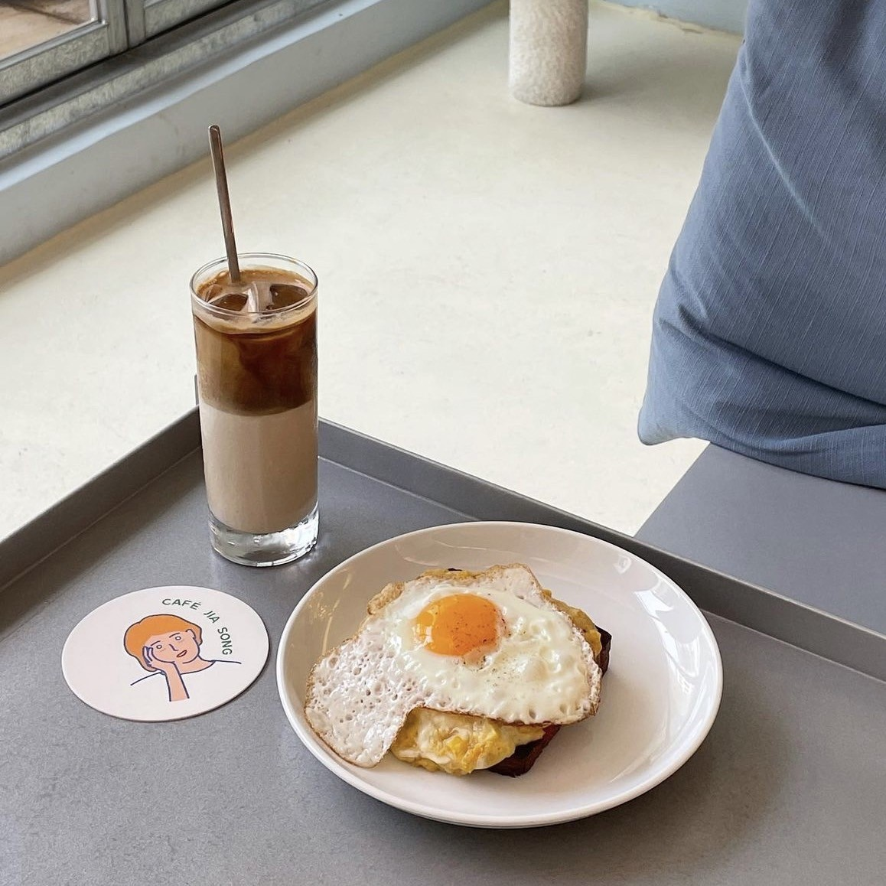

首頁 |
中山區 |
大安區 |
信義區 |
關於
一起吃飯吧

在百貨林立的中山區，巷弄裡有著許多質感小店、隱藏美食、潮流服飾等， 逛累了可以到咖啡廳休息，那裡有很多不同風格的咖啡廳可以選擇， 圖片中的店正位於中山區的一條小巷子裡，那間是由老公寓去改建而成，整間店的裝潢明亮又不擁擠，餐點也表現不錯。 整體有點在繁忙的都市裡偷閒的感覺，推薦給喜歡到咖啡廳拍照吃美食的人!
台北大安區根本就是美食聚集地！ 不僅捷運便利，還可以逛街吃美食的好地方！ 咖啡廳、火鍋店、牛排館、各式各樣的美食餐廳應有儘有。
推薦信義區美食餐廳，信義區除了各大精品以及百貨公司之外， 還有許多美食餐廳，從高級的餐廳到平價的餐廳通通有！一起點進來看看吧～
隱藏/顯示介紹